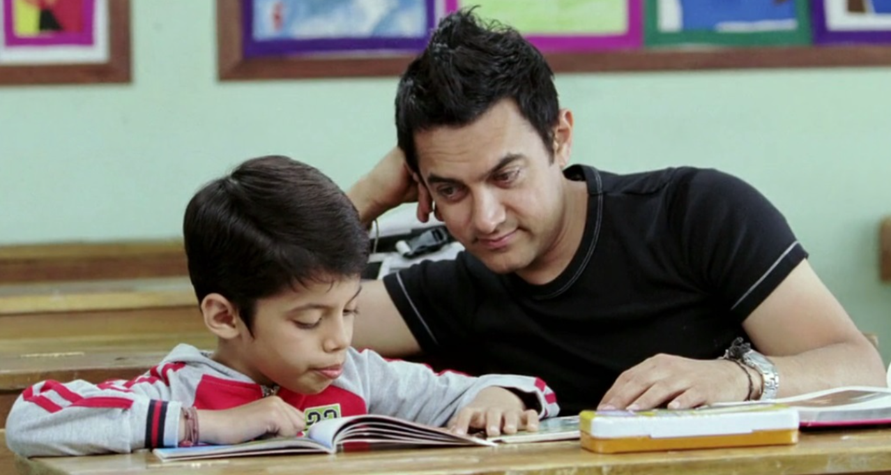

Emotional Security
Feeling understood can help a child communicate emotions and seek support.
Positive parenting focuses on building a relationship where children feel heard, respected, supported and guided.

Positive parenting encourages adults to understand a child's needs and emotions while setting healthy boundaries.
Give children time to understand and respond.
Notice effort instead of focusing only on mistakes.
Correct behaviour while keeping communication respectful.
A child's development involves more than academic performance.
Feeling understood can help a child communicate emotions and seek support.
Positive feedback can encourage children to participate, explore and keep trying.
Supportive adults can help children manage difficult moments more safely.
Respectful communication teaches children how healthy relationships can feel.
Child feels heard.
Child feels capable.
Child feels ready to explore.